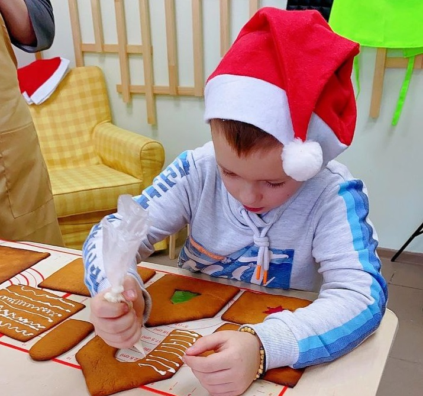
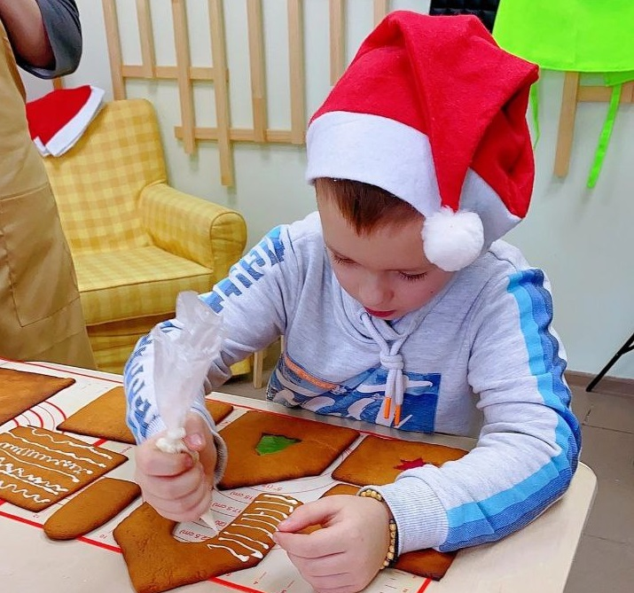

ОТЗЫВЫ
На Сходне открылась творческая Мастерская , расположена, очень удобно рядом станция Сходня , рядом остановка автобусов, парковка есть . В Мастерской проводятся Мастер Классы для детей и взрослых, можно купить подарки ручной работы . Я купила подарочки набор новогодних пряников , игрушку на ёлку домик, мыло ручной работы и много чего интересного увидела, обязательно буду заходить . Огромное спасибо , приветливой хозяйки Мастерской Марине.
Волшебный магазин уникальных изделий ручной работы. Мастер классы проводят мастера высшей категории, которые проходят в атмосфере тепла и уюта. В мастерской интересно и детям, и взрослым. Очень здорово, что на а Сходне появилось такое место, где можно увлекательно провести время вместе с детьми
Отличное творческое место. Можно не только посетить интересные мастер-классы, но и приобрести замечательные подарки ручной работы местных мастеров по привлекательным ценам.
Чудесное место, очень уютная творческая мастерская. Можно не только с пользой провести время, но и купить классные штучки на подарки.
Это реально было потрясающе! Так интересно, столько идей, столько возможностей для творчества! Светлана дала нам полный полет фантазии, не ограничивая рамками какой-то определенной работы! Как здорово, что есть такое место в Химках, где можно так душевно поработать!


 
